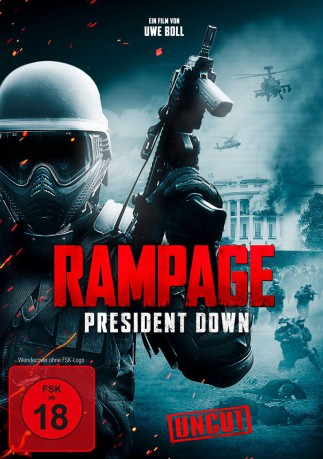
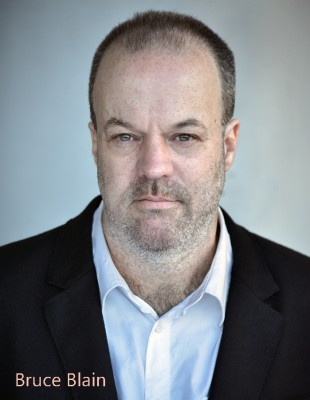

#4340 Rampage 3 - President Down
 gesehen am 12.09.2016
gesehen am 12.09.2016
 
 IMDB-Wertung: 5.1 / 10
IMDB-Wertung: 5.1 / 10  Metascore: 0
Metascore: 0 
Nach der Geiselnahme in einem TV-Sender und der darauffolgenden Explosion im Gebäude wurde Bill Williamson für tot erklärt. Dass dies sein Plan war, konnte keiner ahnen… Jahre nach dem Attentat lebt Bill fernab der Zivilisation und bereitet sich auf seinen nächsten Coup vor. Dank seines rigorosen Trainings als Scharfschütze gelingt es ihm, zunächst unerkannt den US-Präsidenten in Washington auszuschalten. Auf der fieberhaften Suche nach dem Täter wird das FBI auf den totgeglaubten Amokläufer aufmerksam. Schnell wird Bills Versteck ausfindig gemacht, doch jedem ist klar: Bill wird nicht kampflos untergehen! Seine finale Mission steht an und er ist bereit, dafür sein Leben zu geben...
Jahr: 2016
Dauer: 99 Minuten
FSK: 18
Land: Kanada Studio: Splendid FilmTonspuren: DTS - ,
Untertitel: Deutsch,
Auflösung: 1080p (1920x1080) Größe: 10547 MB
Genre: Action, Krimi, Thriller
Regisseur: Uwe Boll
Drehbuch: Bart De Pauw
Soundtrack:
Darsteller:
 Brendan Fletcher als Bill Williamson
Brendan Fletcher als Bill Williamson-  Bruce Blain als The Homeless Guy
 Loretta Walsh als WK7 News Reporter #1
Loretta Walsh als WK7 News Reporter #1- Zain Meghji als WK7 News Reporter #2
- Steve Baran als FBI Agent James Molokai
- Ryan McDonell als FBI Agent Vincent Jones
- Scott Patey als FBI Agent Murray
 Crystal Lowe als Bill's Girlfriend
Crystal Lowe als Bill's Girlfriend Dan Shea als SWAT Team Member #1
Dan Shea als SWAT Team Member #1- Tyson Arner als SWAT Team Member #5
 Shawn Stewart als SWAT Team Member #6
Shawn Stewart als SWAT Team Member #6- John Sampson als SWAT Team Member #9
- Jovan Nenadic als SWAT Team Member #12
- Trevor Jones als Cop #1
- Janina Dall als Cop #4
 Mike Carpenter als Cop #5
Mike Carpenter als Cop #5- Uwe Boll als Rampage Killer #2 , uncredited
- Anthony Rogers als FBI Agent
- Brian Brisco als SWAT Team Member #2
- Matthew Sulzle als SWAT Team Member #3
- Brennan Walstrom als SWAT Team Member #4
- Colby Chartrand als SWAT Team Member #7
- Raymond Sammel als SWAT Team Member #8
- Kye Walstrom als SWAT Team Member #10
- John Ulmer als SWAT Team Member #11
- Owen Walstrom als SWAT Team Member #13
- Adrian Persad als SWAT Team Member #15
- Deb Mac als Cop #2
- Rick Pearce als Cop #3
- Victor Formosa als FBI Agent , uncredited
Datei: X:\FSK18-Collections\Rampage\Rampage 3 - President Down (2016, FSK18, 1920x1080).mkv seit 12.09.2016
Festplatte: FSK18
 Alle Filme aus Gruppe 'FSK18-Collections\Rampage'
Alle Filme aus Gruppe 'FSK18-Collections\Rampage'